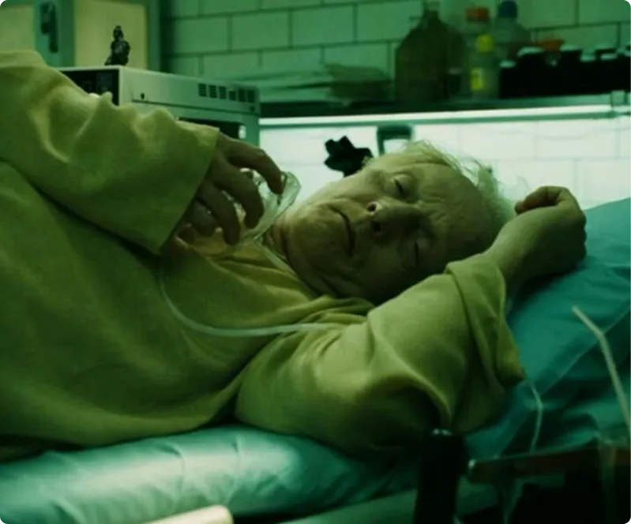
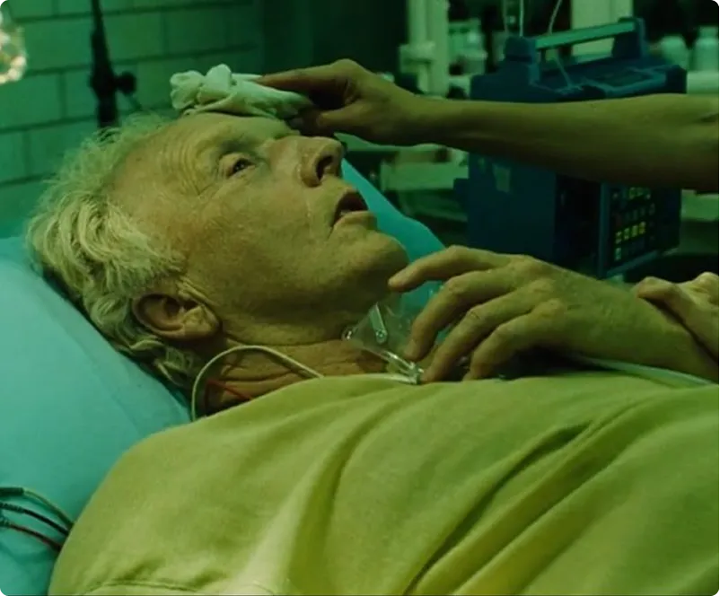
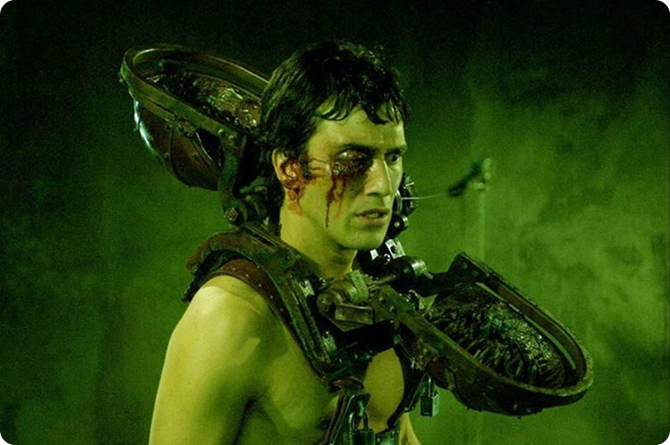
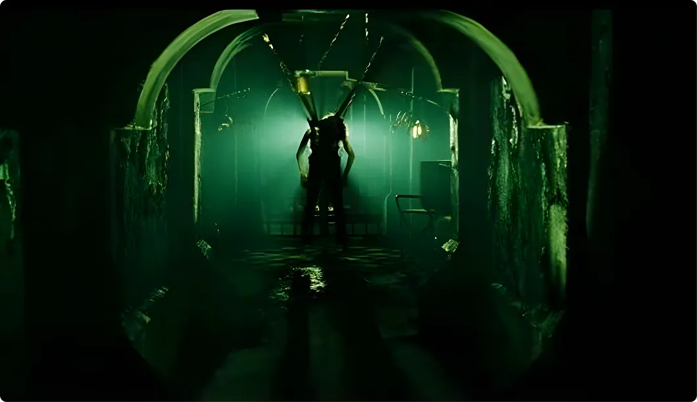
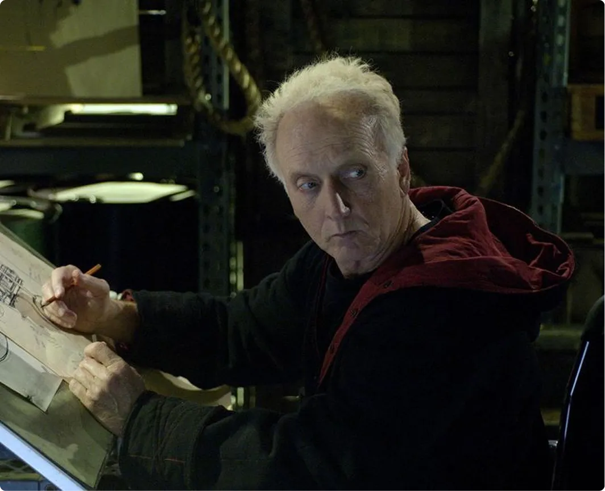
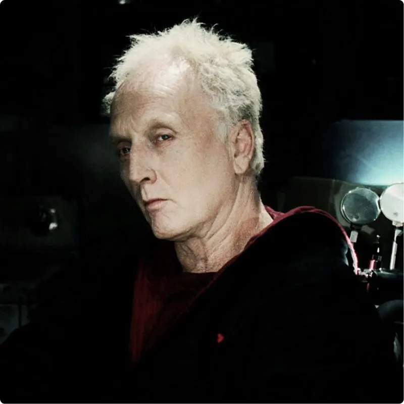
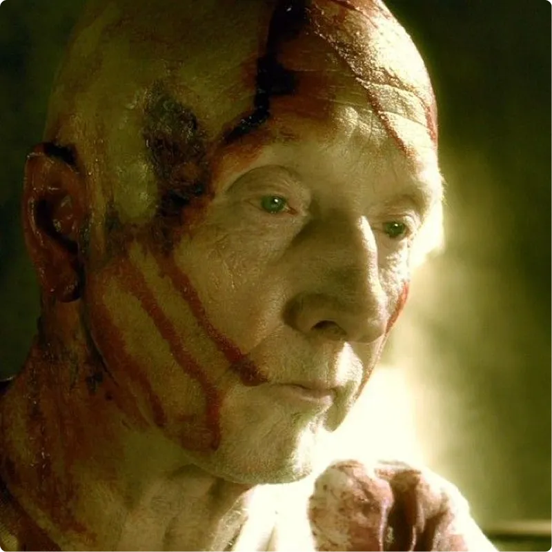

Происхождение идей
Джона Крамера
Тяжелая болезнь, которая лишила его контроля над собственным телом и будущим, стала первым ударом. Разочарование в людях, в их равнодушии и неспособности ценить жизнь, лишь усилило его внутренний надлом. Крамер пришёл к убеждению, что большинство людей живут, как автоматы, не задумываясь о смысле своего существования, пока не столкнутся лицом к лицу со смертью.
Смертельный диагноз и последовавшие за ним события стали катализатором. Для Крамера страх перестал быть просто негативной эмоцией. Он увидел в нём мощный инструмент, способный пробудить человека, заставить его переосмыслить свои ценности и приоритеты.


Именно поэтому он считал свою деятельность не преступлением, а своеобразной миссией — жестоким, но необходимым способом лечения человечества.
Игра на Выживание вместо бессмысленной казни
Один из главных принципов Крамера — предоставление шанса. Его смертоносные ловушки — это не просто орудия убийства. Каждая из них спроектирована таким образом, чтобы у жертвы была возможность выжить, пусть даже ценой невероятных усилий, боли и самопожертвования.

С точки зрения Крамера, это не убийство, а сложная проверка на прочность. Он не лишает человека жизни напрямую, а ставит его в ситуацию, где он сам должен сделать выбор: жить или умереть. Самым важным для него является сам процесс принятия решения. Это жестокий, но, по его мнению, справедливый моральный экзамен, где на кону стоит сама жизнь.
Леденящая рациональность
Что отличает Джона Крамера от большинства злодеев, особенно в жанре хоррора? Его хладнокровная последовательность. Он не действует под влиянием импульса, ярости или жажды крови. Каждое его действие — это результат тщательного планирования и анализа. Он методичен, расчётлив и, что самое страшное, логичен.
Джон Крамер всегда:
- чётко объясняет правила своей игры;
- формулирует принципы, которыми руководствуется;
- строго придерживается собственных установок.
Именно эта внутренняя дисциплина и непоколебимость делают его намного более пугающим, чем любой сумасшедший маньяк.
Зритель сталкивается не просто с актами насилия, а с целой системой взглядов, которая пытается оправдать это насилие рациональными аргументами.
Истина на грани жизни и смерти
Идеи Крамера перекликаются с некоторыми философскими концепциями, особенно с идеей предельного опыта. Подобно радикальным экзистенциалистам, он верит, что истинная сущность человека раскрывается только в экстремальных ситуациях, на самой границе между жизнью и смертью.

В обыденной жизни люди часто:
- носят маски, играют на публику;
- обманывают других и самих себя.
Но стоит им оказаться в смертельной ловушке, как все эти наносные слои исчезают. Остаётся лишь первобытное стремление к выживанию, голая воля к жизни. Именно этот момент, по мнению Крамера, и является моментом истины, когда проявляется настоящая личность человека.
Моральный парадокс: зло во имя добра
Одной из самых пугающих особенностей Крамера является его внутреннее противоречие. Он яростно осуждает людей за их аморальность, но сам при этом прибегает к жестоким и бесчеловечным методам. Он борется с равнодушием, используя крайние формы насилия. Он проповедует ценность жизни, ставя людей на грань гибели.
Этот парадокс делает его фигурой не просто карикатурного злодея, а трагического фанатика, одержимого своей извращённой идеей. Его логика безупречна, но отправные точки этой логики — глубоко ошибочны. Он самовольно присваивает себе право судить других, решать, кто достоин жить, а кто нет.
Место Крамера в жанре хоррора

В контексте жанра хоррора Джон Крамер занимает совершенно особое место. Большинство злодеев пугают зрителей своей физической силой, своей непредсказуемостью, своей жестокостью. Крамер же пугает своей идеей.
Его присутствие в фильме заставляет зрителя не просто сопереживать жертвам и испытывать напряжение от происходящего на экране. Он заставляет каждого задуматься: «На что я готов пойти, чтобы выжить?» Этот эффект переводит страх из области чистого развлечения в область серьёзных размышлений о собственной жизни, ценностях и моральных принципах.
Итог
Джон Крамер — это сложный и противоречивый персонаж, в котором сочетаются черты монстра и философа. Его нельзя назвать героем, но и простым злодеем он тоже не является. Он воплощает в себе опасность идеи, доведённой до абсурда, до фанатичной уверенности в собственной правоте.


Именно эта идейность делает его одним из самых обсуждаемых и запоминающихся антагонистов в истории хоррор-кинематографа. Он пугает не только своими дьявольскими ловушками, но и тем, что его рассуждения, в рамках его собственной системы координат, звучат на удивление убедительно. И в этом кроется главный источник тревоги: зритель осознаёт, что перед ним не хаос безумия, а порядок фанатичной логики, что делает его ещё более опасным.